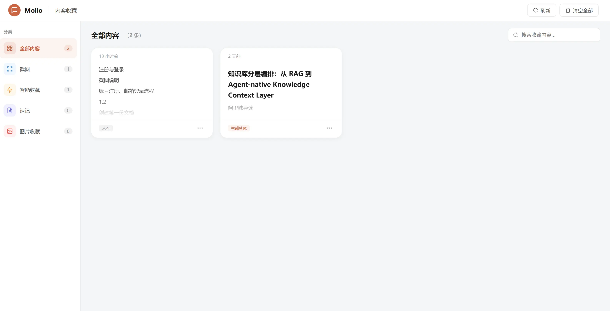
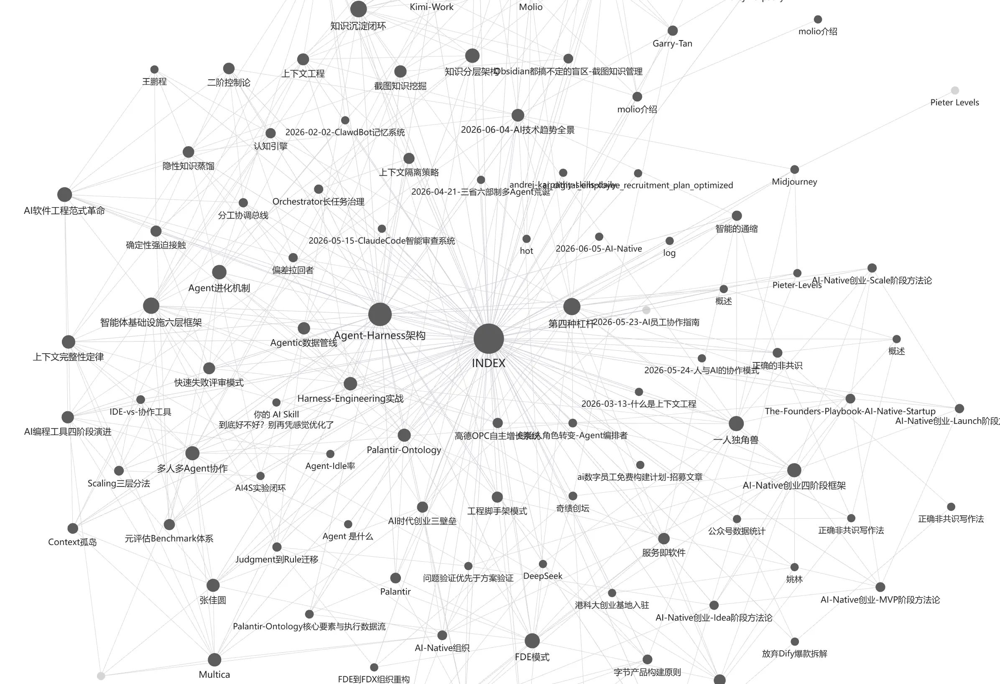
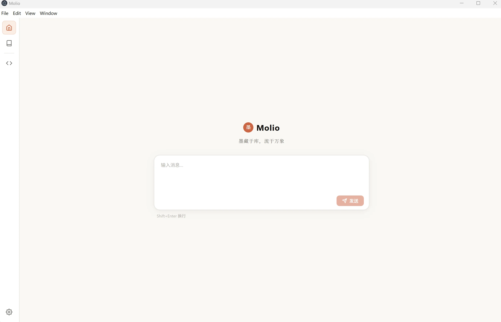
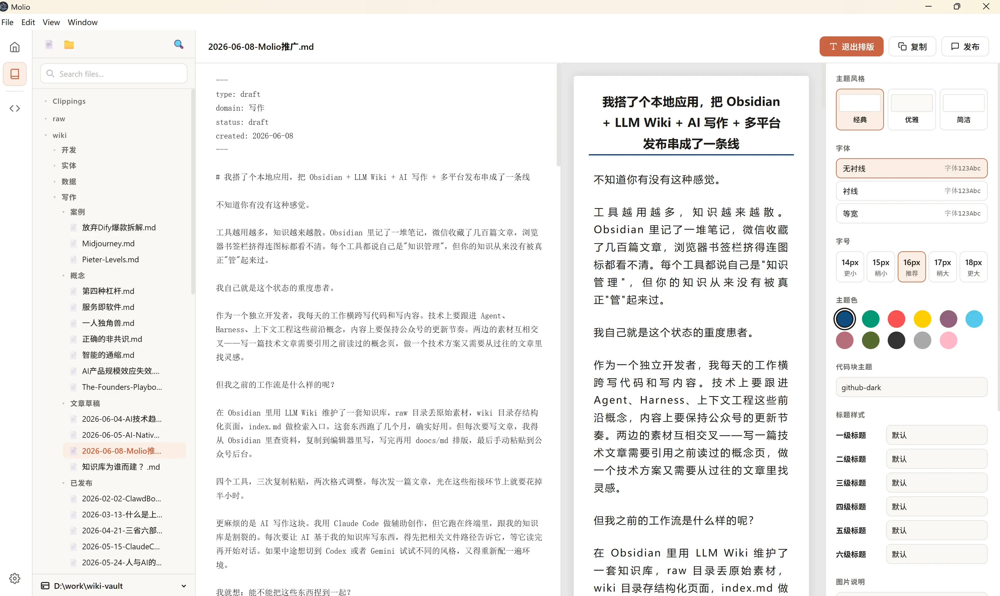
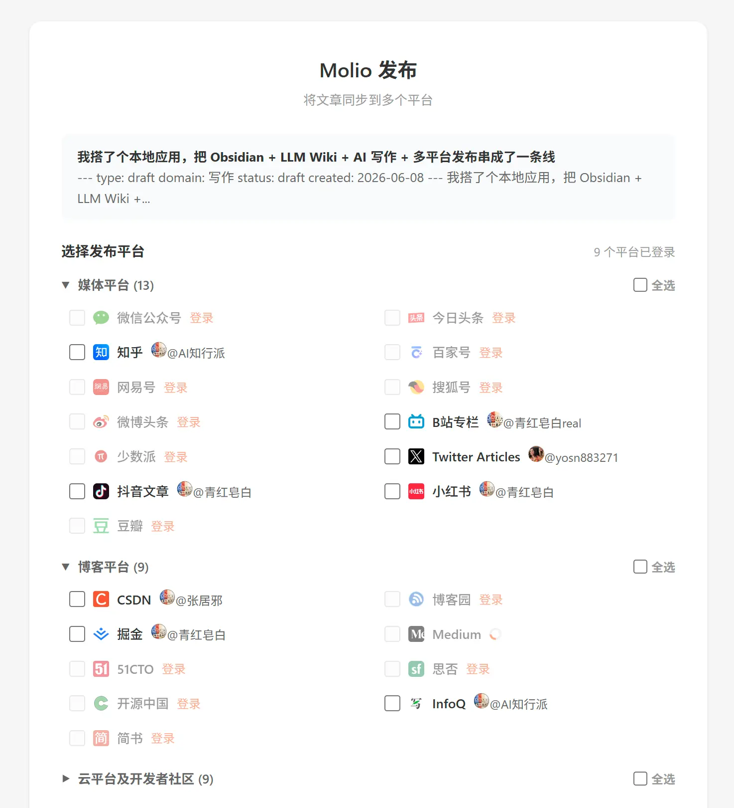

2026 年最佳 Obsidian 替代方案推荐
全面对比 Obsidian、Notion、Logseq 与 Molio，从本地优先、AI 集成、隐私安全等维度帮你选择第二大脑。
不再在 Obsidian、剪藏插件、AI 客户端、排版工具之间切换。Molio 把收集、沉淀、关联、创作、发布串成一条线。

浏览网页时看到好内容？Chrome 扩展一键剪藏到你的知识库，自动唤起桌面端定位到刚保存的文件。支持公众号文章、PDF、Markdown 等多种格式。
让每一次记录，都成为可追溯、
可检索、可复用的知识资产。
Molio 自动构建知识节点间的双向链接网络，可视化呈现知识图谱。当你查看一个主题时，相关脉络自然浮现。

不用敲命令行，在 UI 里选 Agent、发消息、看流式输出。支持 Claude Code / Codex / Gemini CLI 一键切换。

创作完成后，Molio 集成 doocs/md 排版引擎，微信公众号、知乎等平台格式一键转换；配合 doocs/cose 发布到 30+ 内容平台。


全面对比 Obsidian、Notion、Logseq 与 Molio，从本地优先、AI 集成、隐私安全等维度帮你选择第二大脑。
在 Molio 中零命令行使用 Claude Code：安装、配置 API Key、加载项目上下文、多轮对话与工具调用。